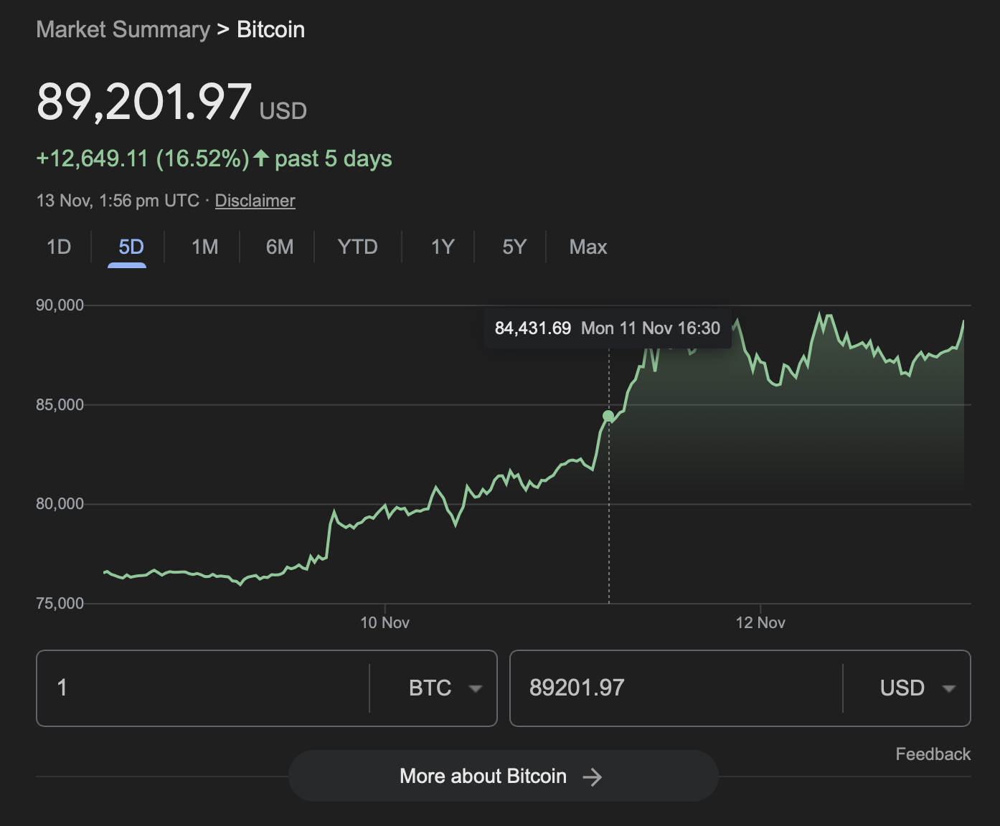

Self Link: Investing in Bitcoin
With President Trump’s election in the 2024 US presidential race, Bitcoin has risen around 17% in a week of the election. This note contains my musings on why I am still skeptical of cryptocurrencies.

What is Money?
Source: The History of Money: Barter, Fiat and Bitcoin
We started using money around 5000 years ago, before which we used a barter system to trade goods of value. The keyword here is value. For example, a simple barter exchange would be when someone trades salt for grains. Here, the value arises from people’s requirements.
The process of obtaining goods one did not produce allowed for specialization among people. I assume goods that were harder to make (requiring more skill) had fewer people creating them, thus leading to an increase in value. In this case, the value arises from the scarcity of resources. People who produced goods trusted by a large group created brands. Well-known or “trusted” brands would naturally be of higher value. In this case, the value was created by trust.
An immediate problem with the barter system is that to obtain an item of need, an individual would need to find someone willing to trade that item for something the individual produces. This is referred to as the double coincidence of wants.
Early Money
People started using something other than paper currencies as we do today; rather, they used rare and precious metals (most commonly gold and silver) as intermediaries to trade goods. The value of gold, silver, and other precious metals arose from scarcity. The introduction of precious metals as an intermediary allowed for two things -
- No longer were the requirements of people left up to chance.
- People could store value by accumulating the intermediaries, allowing them to build wealth and carry it into the future.
A major con of using precious metals as currency was that they were heavy and difficult to carry around. They also took up a lot of space when stored and could be stolen if not safely guarded.
Paper Money
Using paper money began when people realized trust could be leveraged to create value. Individuals began exchanging goods with certificates of credit. These certificates promised the holder a certain quantity of gold in exchange for the certificate. This is known as the Gold Standard. Soon, heads of state were able to centralize this process of issuing paper money, which could be exchanged for some quantity of gold. Here, trust was backed by the scarcity of the underlying resource.
As people started to trust the paper currency more, governments realized that large groups of people would not exchange for gold at the same time. This allowed them to safely print more money, allowing governments to lend to businesses at cheaper interest rates. This, in turn, allowed the companies to grow and led to the economy performing well.
The Gold Standard
Source: Was Dropping The Gold Standard A Mistake?
As mentioned above, the gold standard involved backing a nation’s currency on the amount of gold the country held. Initially, all currencies were linked to gold directly. This later changed, with currencies backing themselves on currencies that were backed by gold. The US dollar is an example of a currency backed directly by gold in the 20th century.
The US Dollar
Towards the end of World War 2, the US and its allies entered an agreement that made the currencies of each ally exchangeable for some amount of US dollars. Since the US dollar was backed by gold, the currencies of US allies also became backed by gold, even if these individual countries did not own large stockpiles of the metal. This allowed the US dollar to be the default currency used for global trade. Any nation that owned US dollars could exchange it for gold with the US (note this exchange for gold was between nations and could not be done between individual US citizens and the government).
Following the end of the war, the US economy did very well. Since the US dollar was pegged to gold and other nations’ currencies, it did not increase with the growing economy. This allowed other countries to buy large amounts of the undervalued US dollar. However, in the 1970s, the US economy was not healthy due to high borrowing. Thus, the US dollar became overvalued, and countries started exchanging large quantities of dollars for gold. The US temporarily paused the convertibility of dollars to gold, fearing insufficient gold in its treasury to honor all incoming requests. This temporary pause later turned into an elimination of the gold standard.
FIAT Money
Sources:
With the elimination of the gold standard, currencies solely based their value on government policies regarding how much money to print. Generally, an independent government body (the FED in the US) is responsible for setting these policies. FIAT money is valued by the government and people’s trust in the government. Since FIAT money is not backed by any commodity, in the future, if people lose trust in the government or the government starts printing too much money, the currency could lose all its value.
Bitcoin
As a country prints more money, the inherent value offered by the same denomination falls. In other words, the same amount of money would now buy fewer goods. This is called inflation. Thus, if the government started printing too much money, i.e., if inflation rose unchecked, people’s savings would deteriorate.
Cryptocurrency vs Blockchain
Why Not Gold?
Experts Opinion on Bitcoin
Source: